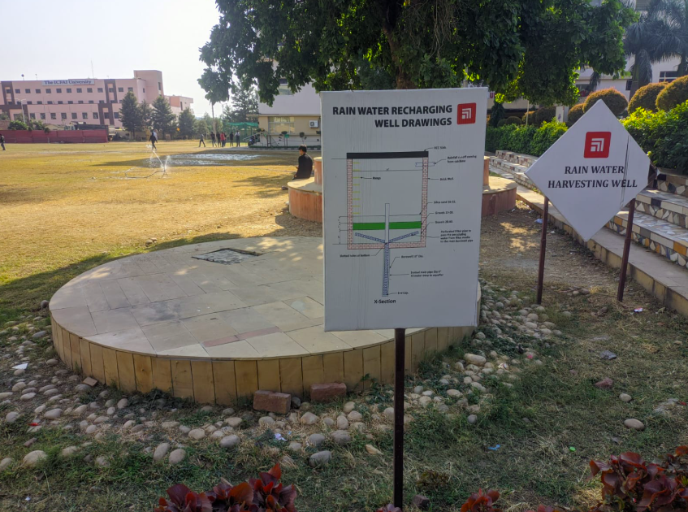
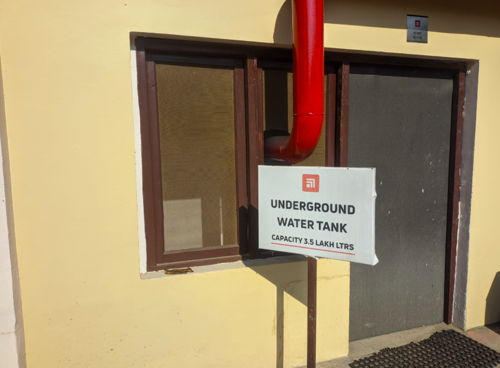
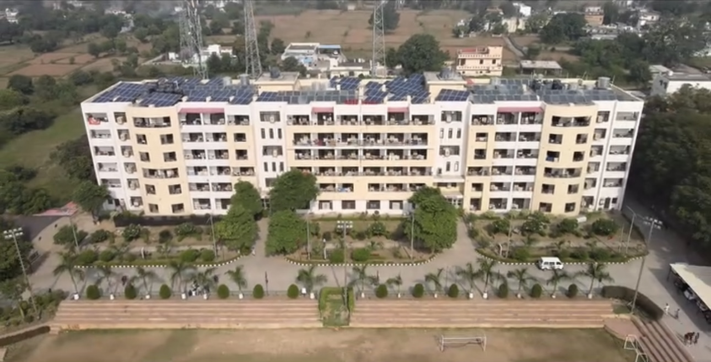

Rainwater Harvesting
Rainwater harvesting systems at Chitkara University are part of the campus's sustainability initiatives. These systems aim to conserve water by capturing and utilizing rainwater for various purposes. Here's an overview: Features of the Rainwater Harvesting System Collection Mechanism: Rainwater from rooftops and open surfaces is collected using well-designed drainage systems. Filtration: Before storage or infiltration, the water passes through filters to remove debris and impurities. Storage: The filtered water is stored in underground tanks or reservoirs for reuse. Recharge Wells: Excess water is directed into recharge wells to replenish groundwater levels, addressing water table depletion. Benefits Water Conservation: Reduces dependency on external water sources. Sustainability: Promotes eco-friendly practices by utilizing a renewable resource. Cost Savings: Reduces water bills and ensures water availability during dry seasons. Environmental Impact: Mitigates the risk of urban flooding and improves groundwater quality. Uses Irrigation of campus greenery. Non-potable uses such as flushing and cleaning. Contribution to research on sustainable water management practices. By implementing rainwater harvesting, Chitkara University exemplifies its commitment to environmental sustainability and resource efficiency.

Bottle-Shaped Dustbin

The bottle-shaped dustbins at Chitkara University are a creative and eco-friendly initiative aimed at promoting waste segregation and recycling. These uniquely designed dustbins are shaped like large bottles to encourage students and staff to properly dispose of plastic waste and create awareness about environmental conservation. Features of the Bottle-Shaped Dustbins Design: The dustbins are designed to look like giant bottles, symbolizing their purpose—collecting plastic waste. Material: Made from durable materials, they are weather-resistant and placed at strategic locations across the campus. Purpose: Dedicated primarily to collecting recyclable plastic waste. Impact and Benefits Awareness: The design draws attention and inspires individuals to think about plastic waste and its impact on the environment. Segregation: Facilitates the separation of plastic from general waste, making recycling more efficient. Aesthetic Appeal: Adds a visual and educational element to the campus's waste management system. Sustainability Efforts These dustbins are part of Chitkara University’s broader efforts toward sustainable development. By integrating such creative solutions, the university fosters a culture of environmental responsibility among its community. This initiative also complements other green practices on campus, such as rainwater harvesting and solar energy usage, reflecting a strong commitment to eco-friendly operations.
Underground Water Tank
The water tanks at Chitkara University play a crucial role in the campus’s water management system, ensuring a reliable water supply for various purposes, including daily operations, irrigation, and sanitation. These tanks are designed to support the university's commitment to sustainability and efficient resource utilization. Features of the Water Tanks Capacity: The tanks have a high storage capacity to meet the needs of the large campus community. Material: Made of durable materials such as concrete or high-quality plastic to ensure longevity and hygiene. Placement: Strategically located around the campus, including overhead and underground tanks, to ensure efficient water distribution. Role in Water Management Rainwater Harvesting Integration: Some tanks are connected to the rainwater harvesting system, storing collected and filtered rainwater for reuse. Backup Supply: Acts as a backup during water shortages, ensuring uninterrupted operations on campus. Water Treatment: Linked to water treatment systems to ensure clean and safe water for drinking and other uses. Benefits Efficient Water Distribution: Ensures a consistent water supply across various campus facilities. Sustainability: Reduces dependence on external water sources by integrating rainwater harvesting. Support for Green Initiatives: Contributes to maintaining the campus's greenery by providing water for irrigation. By effectively utilizing water tanks as part of its infrastructure, Chitkara University exemplifies a commitment to sustainability and efficient resource management.

Solar Panel System

The solar panels at Chitkara University are a testament to the institution's dedication to sustainable energy practices and environmental conservation. These solar installations significantly reduce the campus’s reliance on non-renewable energy sources while promoting a greener and more energy-efficient environment. Features of Solar Plates at Chitkara University Strategic Installation: Solar plates are installed on rooftops and open areas with maximum exposure to sunlight to harness solar energy effectively. Energy Generation: These panels contribute to generating renewable energy used for powering various campus operations. Technology: Equipped with advanced photovoltaic (PV) technology, they convert sunlight directly into electricity with high efficiency. Applications Power Supply: Electricity generated is used for lighting, powering appliances, and running equipment in classrooms, labs, and administrative areas. Water Heating: Solar energy is also utilized for heating water in hostels and kitchens. Backup Power: Serves as a backup energy source during power outages, ensuring uninterrupted campus activities. Benefits Environmental Impact: Reduces carbon footprint by cutting down greenhouse gas emissions. Cost Savings: Lowers electricity bills and operational costs in the long term. Contribution to Sustainability The solar panel system aligns with Chitkara University’s broader green initiatives, including rainwater harvesting, waste management, and eco-friendly campus design. It reinforces the university's role as a leader in promoting sustainability in education.